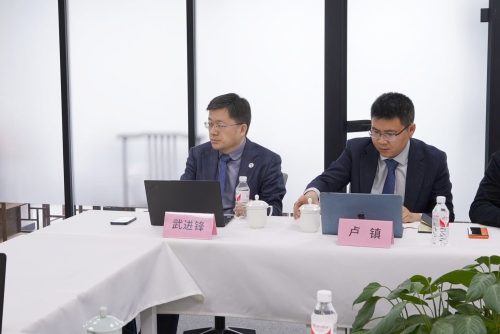
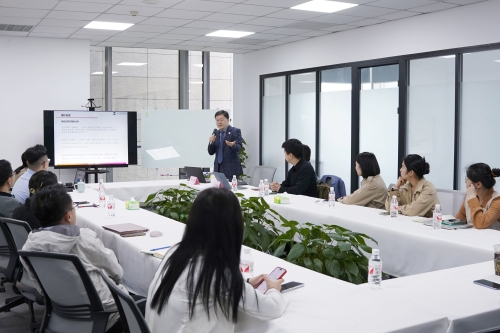
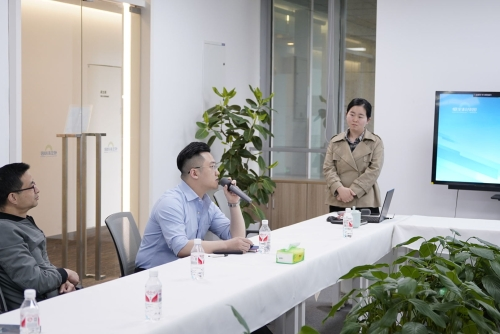
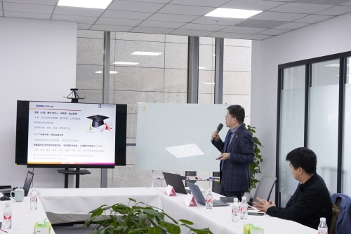
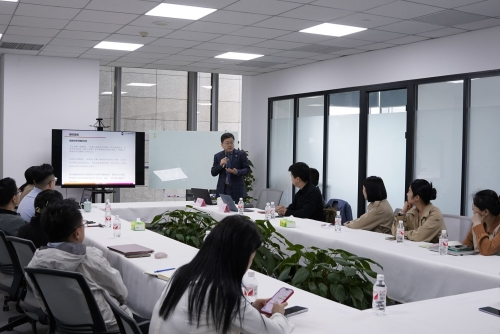
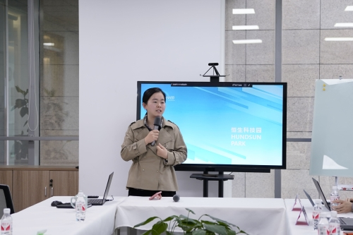

嘉宾介绍
武进锋律师
毕业于哥伦比亚大学法学院和北京大学法学院，是中国和美国纽约州执业律师，从业20多年，目前兼任中国国际经济贸易仲裁委员会、上海国际仲裁中心、深圳国际仲裁院、以及上海、天津、重庆、南京、武汉、沈阳、西安、厦门、常州仲裁委员会等12 家仲裁机构的仲裁员。曾在华为、通用电气、达芙妮等企业担任法务高管，其中，在华为法务部工作十年,是华为国际法务团队的创始人。熟悉企业法律风险管控并擅长处理复杂、疑难金融商事知识产权涉外案件，其作为仲裁员(含首席、独任)审理的案件上百件，标的额超百亿人民币;其代理及审理的案件涉及基金、对赌协议、投资并购、合资合作、股权转让、特许经营、PPP、融资性贸易、国际贸易、买卖、租赁、借贷、担保、技术开发、知识产权侵权等类型。武律师经常受邀在各种场合讲授法律实务课程,其服务的客户涉及高科技.制造、零售、娱乐等行业。
卢镇律师
毕业于复旦大学，获得法律硕士学位。北京浩天(上海)律师事务所合伙人，获律师中级职称，数据合规师，中国中小企业协会调解中心调解员。2023年被选任石拐区、固原市、平原县、昆都仑区涉案企业合规第三方监督评估机制专业人员。专长于商事争议解决，兼并收购、企业合规领域。执业生涯中曾为数家上市公司、大型国有企业及大型外资企业提供分享裁、兼并收购、合规等法律服务。

4月19日，一场聚焦科技创新企业法律风险管理的高端交流会在恒生科技园上海运营中心成功举办。交流会汇聚了来自各行业的科创企业代表、资深律师就科技创新企业如何有效识别、预防和应对法律风险，构建全面的合规管理体系展开深入研讨与交流，旨在助力我国科技创新企业稳健前行，护航创新驱动发展战略实施。
会议伊始，恒生科技园特邀嘉宾北京浩天(上海)律师事务所武进锋律师、卢镇律师与我们交流科创企业法律风险管理，就当前科技创新领域的法规政策走向、监管重点进行了权威解读，强调科技创新企业应深刻理解和把握政策导向，将合规经营融入企业发展战略。随后，两位资深律师详细剖析了科技创新行业的最新发展趋势，围绕合同风险、劳动用工风险、知识产权风险、股权风险、融资风险等热点议题展开深度对话。现场还设有答疑环节，两位律师针对参会企业提出的个性化法律问题给予了专业、细致的解答。




